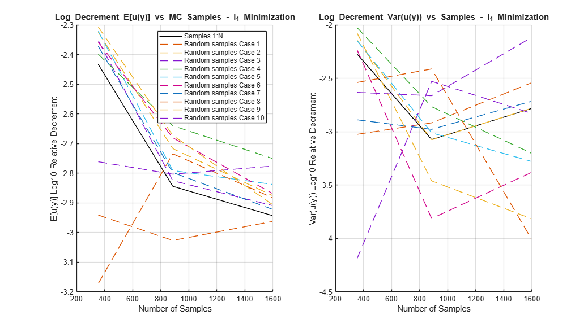
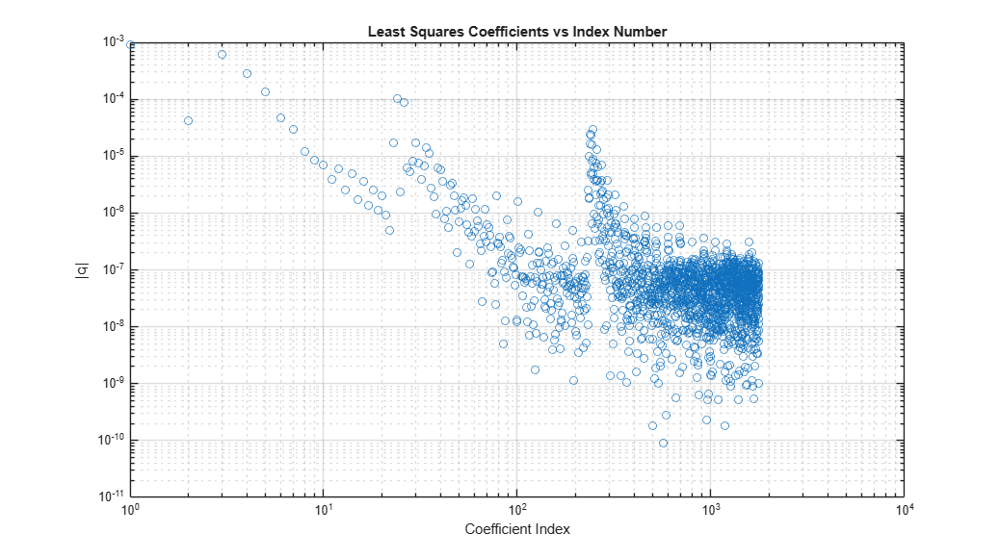

Contents
% 6412 - HW5 - Q2 % Austin Bodin % Adam Yarrow
Problem 2
addpath(genpath(pwd)); addpath(genpath('..\..\Library')); load("u_samples.mat"); load("y_samples.mat"); p = 3; d = 20;
Run L1 regularisation
nRandCases = 10; % Non-Random Sampling [meanU_Orig, varU_Orig, Ncases] = runL1Sampling(false, y_samples, u_samples, p, d); % Run a few random samples randMeanU = NaN(numel(Ncases), nRandCases); randVarU = NaN(numel(Ncases), nRandCases); for i = 1:nRandCases [randMeanU(:,i), randVarU(:,i), ~] = runL1Sampling(true, y_samples, u_samples, p, d); end
Sample statistics
muTrue = mean(u_samples); varTrue = var(u_samples);
Plot
fPlotDecrement = true; if fPlotDecrement dataMean = log10(abs((meanU_Orig - muTrue) / muTrue)); dataMeanRandom = log10(abs((randMeanU - muTrue) / muTrue)); dataVar = log10(abs((varU_Orig - varTrue) / varTrue)); dataVarRandom = log10(abs((randVarU - varTrue) / varTrue)); yMeanName = 'E[u(y)] Log10 Relative Decrement'; yVarName = 'Var(u(y)) Log10 Relative Decrement'; titleModifier = 'Log Decrement '; else dataMean = meanU_Orig; dataVar = varU_Orig; dataMeanRandom = randMeanU; dataVarRandom = randVarU; yMeanName = 'E[u(y)]'; yVarName = 'Var(u(y))'; titleModifier = ''; end figure('Name','ASEN6412 - HW5 - Q2'); subplot(1,2,1); hold on; plot(Ncases, dataMean,'k','DisplayName','Samples 1:N'); for i = 1:nRandCases plot(Ncases, dataMeanRandom(:,i),'--','DisplayName',sprintf('Random samples Case %i', i)); end grid on; legend(); xlabel('Number of Samples'); ylabel(yMeanName); title(sprintf('%sE[u(y)] vs MC Samples - l_1 Minimization',titleModifier)) subplot(1,2,2); hold on; plot(Ncases, dataVar,'k','DisplayName','Samples 1:N'); for i = 1:nRandCases plot(Ncases, dataVarRandom(:,i),'--','DisplayName',sprintf('Random samples Case %i', i)); end grid on; xlabel('Number of Samples'); ylabel(yVarName); title(sprintf('%sVar(u(y)) vs Samples - l_1 Minimization',titleModifier))

Plot sparsity of problem
P = factorial(p+d) / (factorial(p) * factorial(d)) - 1; N = numel(u_samples); %(P+1); psi = zeros(N, P+1); index_pc = nD_polynomial_array(d,p); for i = 1:N psi(i,:) = piset(y_samples(i,:), index_pc); end c = pinv(psi)*u_samples(1:end); figure('Name','Coefficients Plot'); loglog(1:(P+1), abs(c),'o'); grid on; xlabel('Coefficient Index'); ylabel('|c_i|'); title('Least Squares Coefficients vs Index Number')

Functions
function [meanU, varU, Ncases] = runL1Sampling(fRandomSampling, y_samples, u_samples, p, d) P = factorial(p+d) / (factorial(p) * factorial(d)) - 1; Ncases = ceil([0.2; 0.5; 0.9] * (P+1)); numN = numel(Ncases); index_pc = nD_polynomial_array(d,p); c_ell1 = cell(numN,1); meanU = NaN(numN,1); varU = NaN(numN,1); opts = spgSetParms('iterations',6000,'verbosity',1,... 'optTol',1e-9,'bpTol',1e-9); sigma = 0.005; for iN = 1:numN N = Ncases(iN); if fRandomSampling idx = randsample(1:numel(u_samples),N,false); y = y_samples(idx,:); u = u_samples(idx); else y = y_samples(1:N,:); u = u_samples(1:N); end % Make psi psi = zeros(N, P+1); for i = 1:N psi(i,:) = piset(y(i,:), index_pc); end delta = sigma*norm(u); % solve system [c_ell1{iN},res,gap,info] = spg_bpdn(psi,u,delta,opts); % extract Mean and variance meanU(iN) = c_ell1{iN}(1); % First order coefficient % note: <psi^2(y)> = 1 for legendre polynomials that have been % orthonomalized varU(iN) = sum(c_ell1{iN}(2:end).^2); % Remove first term in summation to remove mean^2 end end
===================================================================
SPGL1 v2.0 (28 Nov 2019)
===================================================================
No. rows : 355 Initial tau : 0.00e+00
No. columns : 1771 2-norm of b : 2.17e-02
Optimality tol : 1.00e-09 Target ||Ax-b||_2 : 1.09e-04
Basis pursuit tol : 1.00e-09 Maximum iterations : 6000
Iter ||Ax-b||_2 Relative Gap Rel Error ||A'r||_d ||x||_p
0 2.1721201e-02 0.0000000e+00 2.16e-02 3.23e-01 1.45e-03
6 5.5220850e-03 2.2162609e-08 5.41e-03 4.35e-02 2.14e-03
14 1.3796634e-03 5.1430878e-08 1.27e-03 5.24e-03 2.48e-03
38 4.1283558e-04 9.4663725e-09 3.04e-04 8.76e-04 2.62e-03
94 1.5463810e-04 3.6327278e-09 4.60e-05 2.35e-04 2.65e-03
162 1.1059478e-04 4.7181845e-10 1.99e-06 1.55e-04 2.65e-03
212 1.0861130e-04 7.3540138e-11 5.30e-09 1.52e-04 2.65e-03
213 1.0860600e-04 1.4820585e-10 8.71e-13 1.52e-04
EXIT -- Found a root
Products with A : 308 Total time (secs) : 0.3
Products with A' : 214 Project time (secs) : 0.1
Newton iterations : 7 Mat-vec time (secs) : 0.1
Line search its : 95
===================================================================
SPGL1 v2.0 (28 Nov 2019)
===================================================================
No. rows : 886 Initial tau : 0.00e+00
No. columns : 1771 2-norm of b : 3.44e-02
Optimality tol : 1.00e-09 Target ||Ax-b||_2 : 1.72e-04
Basis pursuit tol : 1.00e-09 Maximum iterations : 6000
Iter ||Ax-b||_2 Relative Gap Rel Error ||A'r||_d ||x||_p
0 3.4448341e-02 0.0000000e+00 3.43e-02 8.17e-01 1.45e-03
6 8.8159732e-03 1.0634174e-09 8.64e-03 1.06e-01 2.16e-03
12 2.1140935e-03 7.0560135e-09 1.94e-03 1.24e-02 2.49e-03
22 6.7533742e-04 6.7289479e-08 5.03e-04 2.09e-03 2.66e-03
42 2.9210498e-04 1.0717063e-08 1.20e-04 4.85e-04 2.73e-03
78 1.8815666e-04 2.0807688e-09 1.59e-05 2.36e-04 2.74e-03
113 1.7269723e-04 3.6339408e-10 4.56e-07 2.05e-04 2.74e-03
115 1.7224249e-04 3.2032903e-09 7.90e-10 2.05e-04
EXIT -- Found a root
Products with A : 147 Total time (secs) : 0.2
Products with A' : 116 Project time (secs) : 0.0
Newton iterations : 7 Mat-vec time (secs) : 0.2
Line search its : 32
===================================================================
SPGL1 v2.0 (28 Nov 2019)
===================================================================
No. rows : 1594 Initial tau : 0.00e+00
No. columns : 1771 2-norm of b : 4.69e-02
Optimality tol : 1.00e-09 Target ||Ax-b||_2 : 2.35e-04
Basis pursuit tol : 1.00e-09 Maximum iterations : 6000
Iter ||Ax-b||_2 Relative Gap Rel Error ||A'r||_d ||x||_p
0 4.6903686e-02 0.0000000e+00 4.67e-02 1.51e+00 1.45e-03
5 1.1838500e-02 4.0446180e-08 1.16e-02 1.96e-01 2.15e-03
10 2.9747755e-03 2.3909997e-08 2.74e-03 2.42e-02 2.49e-03
17 9.5240851e-04 2.1699209e-08 7.18e-04 4.04e-03 2.66e-03
29 4.1240756e-04 3.3472582e-08 1.78e-04 8.62e-04 2.75e-03
48 2.7830972e-04 2.3669188e-09 4.38e-05 3.31e-04 2.78e-03
77 2.3906919e-04 1.4956963e-09 4.55e-06 2.31e-04 2.79e-03
103 2.3458414e-04 1.1730403e-10 6.57e-08 2.20e-04 2.79e-03
104 2.3451847e-04 1.0560218e-09 3.76e-11 2.20e-04
EXIT -- Found a root
Products with A : 120 Total time (secs) : 0.3
Products with A' : 105 Project time (secs) : 0.0
Newton iterations : 8 Mat-vec time (secs) : 0.3
Line search its : 16
===================================================================
SPGL1 v2.0 (28 Nov 2019)
===================================================================
No. rows : 355 Initial tau : 0.00e+00
No. columns : 1771 2-norm of b : 2.21e-02
Optimality tol : 1.00e-09 Target ||Ax-b||_2 : 1.10e-04
Basis pursuit tol : 1.00e-09 Maximum iterations : 6000
Iter ||Ax-b||_2 Relative Gap Rel Error ||A'r||_d ||x||_p
0 2.2067511e-02 0.0000000e+00 2.20e-02 3.43e-01 1.41e-03
6 5.9595069e-03 3.8784358e-08 5.85e-03 4.62e-02 2.17e-03
14 1.4227654e-03 3.2758420e-08 1.31e-03 5.91e-03 2.48e-03
30 4.3603842e-04 2.4268321e-08 3.26e-04 9.91e-04 2.63e-03
66 1.5941379e-04 2.7780959e-09 4.91e-05 2.57e-04 2.66e-03
113 1.1272692e-04 6.1524366e-10 2.39e-06 1.66e-04 2.66e-03
172 1.1034426e-04 4.0530671e-11 6.70e-09 1.61e-04 2.66e-03
173 1.1033756e-04 4.1530263e-10 2.54e-12 1.61e-04
EXIT -- Found a root
Products with A : 242 Total time (secs) : 0.2
Products with A' : 174 Project time (secs) : 0.0
Newton iterations : 7 Mat-vec time (secs) : 0.1
Line search its : 69
===================================================================
SPGL1 v2.0 (28 Nov 2019)
===================================================================
No. rows : 886 Initial tau : 0.00e+00
No. columns : 1771 2-norm of b : 3.44e-02
Optimality tol : 1.00e-09 Target ||Ax-b||_2 : 1.72e-04
Basis pursuit tol : 1.00e-09 Maximum iterations : 6000
Iter ||Ax-b||_2 Relative Gap Rel Error ||A'r||_d ||x||_p
0 3.4446240e-02 0.0000000e+00 3.43e-02 8.32e-01 1.42e-03
6 9.3598001e-03 7.3203978e-09 9.19e-03 1.16e-01 2.16e-03
12 2.2970624e-03 7.9958271e-09 2.12e-03 1.42e-02 2.50e-03
21 6.8037791e-04 8.1905716e-08 5.08e-04 2.28e-03 2.65e-03
34 2.8693762e-04 1.4076191e-08 1.15e-04 5.42e-04 2.72e-03
55 1.8869706e-04 2.2340069e-09 1.65e-05 2.59e-04 2.73e-03
81 1.7275330e-04 2.9754351e-10 5.22e-07 2.24e-04 2.73e-03
83 1.7223215e-04 3.3216924e-09 9.49e-10 2.23e-04
EXIT -- Found a root
Products with A : 94 Total time (secs) : 0.2
Products with A' : 84 Project time (secs) : 0.0
Newton iterations : 7 Mat-vec time (secs) : 0.1
Line search its : 11
===================================================================
SPGL1 v2.0 (28 Nov 2019)
===================================================================
No. rows : 1594 Initial tau : 0.00e+00
No. columns : 1771 2-norm of b : 4.65e-02
Optimality tol : 1.00e-09 Target ||Ax-b||_2 : 2.32e-04
Basis pursuit tol : 1.00e-09 Maximum iterations : 6000
Iter ||Ax-b||_2 Relative Gap Rel Error ||A'r||_d ||x||_p
0 4.6497536e-02 0.0000000e+00 4.63e-02 1.47e+00 1.46e-03
5 1.1633916e-02 2.9134866e-08 1.14e-02 1.88e-01 2.17e-03
10 2.8742405e-03 1.0163056e-08 2.64e-03 2.30e-02 2.50e-03
16 9.2817247e-04 4.9318611e-08 6.96e-04 3.91e-03 2.67e-03
29 3.9819740e-04 1.6619339e-09 1.66e-04 8.20e-04 2.75e-03
48 2.7223728e-04 2.4200641e-09 3.97e-05 3.23e-04 2.78e-03
70 2.3623922e-04 1.2044200e-09 3.75e-06 2.31e-04 2.78e-03
91 2.3253330e-04 1.1266643e-10 4.56e-08 2.22e-04 2.78e-03
92 2.3248770e-04 7.6544505e-10 1.82e-11 2.22e-04
EXIT -- Found a root
Products with A : 103 Total time (secs) : 0.3
Products with A' : 93 Project time (secs) : 0.0
Newton iterations : 8 Mat-vec time (secs) : 0.2
Line search its : 11
===================================================================
SPGL1 v2.0 (28 Nov 2019)
===================================================================
No. rows : 355 Initial tau : 0.00e+00
No. columns : 1771 2-norm of b : 2.19e-02
Optimality tol : 1.00e-09 Target ||Ax-b||_2 : 1.09e-04
Basis pursuit tol : 1.00e-09 Maximum iterations : 6000
Iter ||Ax-b||_2 Relative Gap Rel Error ||A'r||_d ||x||_p
0 2.1851996e-02 0.0000000e+00 2.17e-02 3.27e-01 1.45e-03
6 5.2775177e-03 1.4589757e-08 5.17e-03 4.05e-02 2.13e-03
14 1.3732923e-03 1.7009178e-08 1.26e-03 5.12e-03 2.47e-03
37 4.4358391e-04 2.6114578e-08 3.34e-04 8.96e-04 2.63e-03
77 1.5597841e-04 1.0514579e-08 4.67e-05 2.48e-04 2.66e-03
136 1.1142601e-04 6.0851985e-10 2.17e-06 1.55e-04 2.66e-03
193 1.0926589e-04 3.4638114e-11 5.91e-09 1.51e-04 2.66e-03
194 1.0925999e-04 5.8874224e-10 7.43e-12 1.51e-04
EXIT -- Found a root
Products with A : 282 Total time (secs) : 0.3
Products with A' : 195 Project time (secs) : 0.1
Newton iterations : 7 Mat-vec time (secs) : 0.2
Line search its : 88
===================================================================
SPGL1 v2.0 (28 Nov 2019)
===================================================================
No. rows : 886 Initial tau : 0.00e+00
No. columns : 1771 2-norm of b : 3.45e-02
Optimality tol : 1.00e-09 Target ||Ax-b||_2 : 1.73e-04
Basis pursuit tol : 1.00e-09 Maximum iterations : 6000
Iter ||Ax-b||_2 Relative Gap Rel Error ||A'r||_d ||x||_p
0 3.4548779e-02 0.0000000e+00 3.44e-02 8.23e-01 1.44e-03
6 8.9558981e-03 2.6792708e-09 8.78e-03 1.12e-01 2.15e-03
11 2.3326494e-03 4.3125452e-08 2.16e-03 1.39e-02 2.51e-03
20 6.8747373e-04 2.8216939e-08 5.15e-04 2.25e-03 2.67e-03
37 2.8257027e-04 4.3034588e-09 1.10e-04 5.40e-04 2.72e-03
58 1.8804104e-04 2.2841025e-09 1.53e-05 2.62e-04 2.73e-03
83 1.7324950e-04 2.9903047e-10 5.06e-07 2.26e-04 2.73e-03
86 1.7274483e-04 1.3474009e-09 9.41e-10 2.25e-04
EXIT -- Found a root
Products with A : 97 Total time (secs) : 0.2
Products with A' : 87 Project time (secs) : 0.0
Newton iterations : 7 Mat-vec time (secs) : 0.2
Line search its : 11
===================================================================
SPGL1 v2.0 (28 Nov 2019)
===================================================================
No. rows : 1594 Initial tau : 0.00e+00
No. columns : 1771 2-norm of b : 4.61e-02
Optimality tol : 1.00e-09 Target ||Ax-b||_2 : 2.30e-04
Basis pursuit tol : 1.00e-09 Maximum iterations : 6000
Iter ||Ax-b||_2 Relative Gap Rel Error ||A'r||_d ||x||_p
0 4.6099955e-02 0.0000000e+00 4.59e-02 1.46e+00 1.45e-03
5 1.1790216e-02 5.2076537e-09 1.16e-02 1.90e-01 2.17e-03
10 3.0013387e-03 1.2792670e-08 2.77e-03 2.30e-02 2.53e-03
17 9.1004882e-04 1.0955772e-08 6.80e-04 3.95e-03 2.69e-03
28 3.9428547e-04 8.9527339e-09 1.64e-04 8.20e-04 2.76e-03
44 2.6815027e-04 2.9035737e-09 3.77e-05 3.27e-04 2.80e-03
65 2.3400250e-04 9.9056071e-10 3.50e-06 2.36e-04 2.80e-03
82 2.3053941e-04 2.6879131e-10 3.96e-08 2.28e-04 2.80e-03
83 2.3049980e-04 1.0213818e-09 2.75e-11 2.28e-04
EXIT -- Found a root
Products with A : 93 Total time (secs) : 0.3
Products with A' : 84 Project time (secs) : 0.0
Newton iterations : 8 Mat-vec time (secs) : 0.2
Line search its : 10
===================================================================
SPGL1 v2.0 (28 Nov 2019)
===================================================================
No. rows : 355 Initial tau : 0.00e+00
No. columns : 1771 2-norm of b : 2.22e-02
Optimality tol : 1.00e-09 Target ||Ax-b||_2 : 1.11e-04
Basis pursuit tol : 1.00e-09 Maximum iterations : 6000
Iter ||Ax-b||_2 Relative Gap Rel Error ||A'r||_d ||x||_p
0 2.2151341e-02 0.0000000e+00 2.20e-02 3.27e-01 1.49e-03
6 5.2813379e-03 2.2375647e-08 5.17e-03 4.13e-02 2.15e-03
13 1.3321808e-03 4.0380556e-08 1.22e-03 5.12e-03 2.47e-03
30 4.4496888e-04 2.2615111e-08 3.34e-04 9.31e-04 2.63e-03
83 1.5769775e-04 1.2305519e-09 4.69e-05 2.38e-04 2.66e-03
146 1.1246137e-04 4.2313178e-10 1.70e-06 1.58e-04 2.66e-03
221 1.1075671e-04 3.6267558e-11 1.17e-13 1.55e-04
EXIT -- Found a root
Products with A : 327 Total time (secs) : 0.2
Products with A' : 222 Project time (secs) : 0.1
Newton iterations : 7 Mat-vec time (secs) : 0.1
Line search its : 106
===================================================================
SPGL1 v2.0 (28 Nov 2019)
===================================================================
No. rows : 886 Initial tau : 0.00e+00
No. columns : 1771 2-norm of b : 3.44e-02
Optimality tol : 1.00e-09 Target ||Ax-b||_2 : 1.72e-04
Basis pursuit tol : 1.00e-09 Maximum iterations : 6000
Iter ||Ax-b||_2 Relative Gap Rel Error ||A'r||_d ||x||_p
0 3.4421504e-02 0.0000000e+00 3.42e-02 7.98e-01 1.48e-03
5 8.4858678e-03 1.1842286e-07 8.31e-03 1.02e-01 2.17e-03
11 2.1187574e-03 1.7334953e-08 1.95e-03 1.20e-02 2.52e-03
19 6.1887450e-04 5.9453634e-08 4.47e-04 1.84e-03 2.67e-03
40 2.7053982e-04 1.3741043e-09 9.84e-05 4.49e-04 2.73e-03
65 1.8533061e-04 1.3358667e-09 1.32e-05 2.28e-04 2.74e-03
92 1.7251355e-04 2.1534214e-10 4.06e-07 2.00e-04 2.74e-03
94 1.7210826e-04 2.4811907e-09 7.41e-10 2.00e-04
EXIT -- Found a root
Products with A : 108 Total time (secs) : 0.4
Products with A' : 95 Project time (secs) : 0.0
Newton iterations : 7 Mat-vec time (secs) : 0.3
Line search its : 14
===================================================================
SPGL1 v2.0 (28 Nov 2019)
===================================================================
No. rows : 1594 Initial tau : 0.00e+00
No. columns : 1771 2-norm of b : 4.62e-02
Optimality tol : 1.00e-09 Target ||Ax-b||_2 : 2.31e-04
Basis pursuit tol : 1.00e-09 Maximum iterations : 6000
Iter ||Ax-b||_2 Relative Gap Rel Error ||A'r||_d ||x||_p
0 4.6169423e-02 0.0000000e+00 4.59e-02 1.46e+00 1.45e-03
5 1.2203569e-02 1.0352013e-07 1.20e-02 2.04e-01 2.17e-03
9 3.0135481e-03 1.5300971e-07 2.78e-03 2.45e-02 2.51e-03
16 9.4751056e-04 2.5213220e-08 7.17e-04 4.07e-03 2.68e-03
29 3.9755113e-04 1.7604245e-09 1.67e-04 8.20e-04 2.76e-03
46 2.7201242e-04 8.9135419e-09 4.12e-05 3.24e-04 2.79e-03
64 2.3526142e-04 2.9810675e-09 4.41e-06 2.25e-04 2.80e-03
82 2.3093424e-04 2.3048817e-10 8.71e-08 2.12e-04 2.80e-03
83 2.3084722e-04 2.1232349e-09 1.01e-10 2.12e-04
EXIT -- Found a root
Products with A : 90 Total time (secs) : 0.5
Products with A' : 84 Project time (secs) : 0.0
Newton iterations : 8 Mat-vec time (secs) : 0.5
Line search its : 7
===================================================================
SPGL1 v2.0 (28 Nov 2019)
===================================================================
No. rows : 355 Initial tau : 0.00e+00
No. columns : 1771 2-norm of b : 2.13e-02
Optimality tol : 1.00e-09 Target ||Ax-b||_2 : 1.07e-04
Basis pursuit tol : 1.00e-09 Maximum iterations : 6000
Iter ||Ax-b||_2 Relative Gap Rel Error ||A'r||_d ||x||_p
0 2.1306848e-02 0.0000000e+00 2.12e-02 3.10e-01 1.46e-03
7 5.5912946e-03 1.7055690e-09 5.48e-03 4.42e-02 2.15e-03
16 1.3296757e-03 1.7607761e-08 1.22e-03 4.93e-03 2.48e-03
36 4.1117665e-04 3.3204781e-08 3.05e-04 8.92e-04 2.62e-03
76 1.4696741e-04 7.1643892e-09 4.04e-05 2.44e-04 2.65e-03
110 1.0837111e-04 1.7568515e-09 1.84e-06 1.62e-04 2.65e-03
165 1.0654343e-04 3.9510154e-11 9.19e-09 1.57e-04 2.65e-03
166 1.0653424e-04 1.0297704e-10 8.17e-13 1.57e-04
EXIT -- Found a root
Products with A : 225 Total time (secs) : 0.5
Products with A' : 167 Project time (secs) : 0.1
Newton iterations : 7 Mat-vec time (secs) : 0.4
Line search its : 59
===================================================================
SPGL1 v2.0 (28 Nov 2019)
===================================================================
No. rows : 886 Initial tau : 0.00e+00
No. columns : 1771 2-norm of b : 3.40e-02
Optimality tol : 1.00e-09 Target ||Ax-b||_2 : 1.70e-04
Basis pursuit tol : 1.00e-09 Maximum iterations : 6000
Iter ||Ax-b||_2 Relative Gap Rel Error ||A'r||_d ||x||_p
0 3.4004140e-02 0.0000000e+00 3.38e-02 7.92e-01 1.45e-03
6 8.9158348e-03 2.3992562e-09 8.75e-03 1.10e-01 2.17e-03
12 2.1709372e-03 1.4943622e-08 2.00e-03 1.27e-02 2.51e-03
21 6.7890297e-04 5.4675596e-08 5.09e-04 2.03e-03 2.68e-03
38 2.8259160e-04 1.1009026e-08 1.13e-04 4.75e-04 2.74e-03
65 1.8546937e-04 1.4782318e-09 1.54e-05 2.34e-04 2.76e-03
96 1.7042990e-04 5.4625791e-10 4.09e-07 2.05e-04 2.76e-03
98 1.7002150e-04 2.3989885e-09 7.98e-10 2.03e-04
EXIT -- Found a root
Products with A : 116 Total time (secs) : 0.9
Products with A' : 99 Project time (secs) : 0.0
Newton iterations : 7 Mat-vec time (secs) : 0.8
Line search its : 18
===================================================================
SPGL1 v2.0 (28 Nov 2019)
===================================================================
No. rows : 1594 Initial tau : 0.00e+00
No. columns : 1771 2-norm of b : 4.69e-02
Optimality tol : 1.00e-09 Target ||Ax-b||_2 : 2.35e-04
Basis pursuit tol : 1.00e-09 Maximum iterations : 6000
Iter ||Ax-b||_2 Relative Gap Rel Error ||A'r||_d ||x||_p
0 4.6912208e-02 0.0000000e+00 4.67e-02 1.51e+00 1.45e-03
5 1.1696682e-02 1.6475429e-08 1.15e-02 1.93e-01 2.14e-03
10 2.9626907e-03 1.5270126e-08 2.73e-03 2.44e-02 2.47e-03
16 1.0068619e-03 5.5156264e-08 7.72e-04 4.20e-03 2.66e-03
29 4.2170541e-04 5.3978697e-09 1.87e-04 8.42e-04 2.75e-03
47 2.8091104e-04 8.9420665e-09 4.64e-05 3.24e-04 2.79e-03
68 2.3979403e-04 2.0220181e-09 5.23e-06 2.18e-04 2.80e-03
86 2.3465187e-04 8.5369408e-10 9.08e-08 2.07e-04 2.80e-03
87 2.3456120e-04 1.3079573e-09 1.63e-10 2.07e-04
EXIT -- Found a root
Products with A : 101 Total time (secs) : 1.6
Products with A' : 88 Project time (secs) : 0.0
Newton iterations : 8 Mat-vec time (secs) : 1.5
Line search its : 14
===================================================================
SPGL1 v2.0 (28 Nov 2019)
===================================================================
No. rows : 355 Initial tau : 0.00e+00
No. columns : 1771 2-norm of b : 2.19e-02
Optimality tol : 1.00e-09 Target ||Ax-b||_2 : 1.09e-04
Basis pursuit tol : 1.00e-09 Maximum iterations : 6000
Iter ||Ax-b||_2 Relative Gap Rel Error ||A'r||_d ||x||_p
0 2.1892025e-02 0.0000000e+00 2.18e-02 3.24e-01 1.47e-03
6 5.2563007e-03 5.1954748e-08 5.15e-03 4.03e-02 2.14e-03
13 1.3248630e-03 1.3937630e-08 1.22e-03 4.85e-03 2.47e-03
35 4.2853129e-04 7.2957074e-09 3.19e-04 8.69e-04 2.63e-03
85 1.4923014e-04 1.5417777e-09 3.98e-05 2.26e-04 2.66e-03
143 1.1078111e-04 2.5914624e-10 1.32e-06 1.57e-04 2.66e-03
205 1.0946013e-04 2.8376507e-11 1.79e-13 1.54e-04
EXIT -- Found a root
Products with A : 299 Total time (secs) : 0.8
Products with A' : 206 Project time (secs) : 0.1
Newton iterations : 7 Mat-vec time (secs) : 0.7
Line search its : 94
===================================================================
SPGL1 v2.0 (28 Nov 2019)
===================================================================
No. rows : 886 Initial tau : 0.00e+00
No. columns : 1771 2-norm of b : 3.52e-02
Optimality tol : 1.00e-09 Target ||Ax-b||_2 : 1.76e-04
Basis pursuit tol : 1.00e-09 Maximum iterations : 6000
Iter ||Ax-b||_2 Relative Gap Rel Error ||A'r||_d ||x||_p
0 3.5181823e-02 0.0000000e+00 3.50e-02 8.35e-01 1.47e-03
6 9.1022656e-03 5.6273519e-09 8.93e-03 1.18e-01 2.16e-03
11 2.3591430e-03 1.0411155e-07 2.18e-03 1.46e-02 2.52e-03
19 6.9176947e-04 3.8140174e-08 5.16e-04 2.27e-03 2.67e-03
36 3.0335060e-04 8.5128470e-09 1.27e-04 5.35e-04 2.75e-03
62 1.9461476e-04 2.5551073e-09 1.87e-05 2.50e-04 2.76e-03
94 1.7643091e-04 3.9608023e-10 5.22e-07 2.15e-04 2.76e-03
96 1.7591005e-04 3.3171834e-09 9.34e-10 2.15e-04
EXIT -- Found a root
Products with A : 115 Total time (secs) : 0.3
Products with A' : 97 Project time (secs) : 0.0
Newton iterations : 7 Mat-vec time (secs) : 0.2
Line search its : 19
===================================================================
SPGL1 v2.0 (28 Nov 2019)
===================================================================
No. rows : 1594 Initial tau : 0.00e+00
No. columns : 1771 2-norm of b : 4.62e-02
Optimality tol : 1.00e-09 Target ||Ax-b||_2 : 2.31e-04
Basis pursuit tol : 1.00e-09 Maximum iterations : 6000
Iter ||Ax-b||_2 Relative Gap Rel Error ||A'r||_d ||x||_p
0 4.6208340e-02 0.0000000e+00 4.60e-02 1.46e+00 1.46e-03
6 1.1916592e-02 2.8680431e-09 1.17e-02 1.95e-01 2.17e-03
11 2.9163831e-03 8.7772875e-09 2.69e-03 2.31e-02 2.51e-03
18 9.1574577e-04 6.0115482e-08 6.85e-04 3.69e-03 2.68e-03
28 4.0602932e-04 1.4455085e-08 1.75e-04 7.92e-04 2.77e-03
44 2.7376400e-04 5.4570390e-09 4.27e-05 3.03e-04 2.81e-03
70 2.3566500e-04 8.4800409e-10 4.62e-06 2.09e-04 2.81e-03
94 2.3111589e-04 2.5634837e-10 7.42e-08 1.99e-04 2.81e-03
95 2.3104187e-04 5.1882767e-09 1.68e-10 2.00e-04
EXIT -- Found a root
Products with A : 110 Total time (secs) : 0.3
Products with A' : 96 Project time (secs) : 0.0
Newton iterations : 8 Mat-vec time (secs) : 0.2
Line search its : 15
===================================================================
SPGL1 v2.0 (28 Nov 2019)
===================================================================
No. rows : 355 Initial tau : 0.00e+00
No. columns : 1771 2-norm of b : 2.10e-02
Optimality tol : 1.00e-09 Target ||Ax-b||_2 : 1.05e-04
Basis pursuit tol : 1.00e-09 Maximum iterations : 6000
Iter ||Ax-b||_2 Relative Gap Rel Error ||A'r||_d ||x||_p
0 2.1042437e-02 0.0000000e+00 2.09e-02 3.04e-01 1.45e-03
6 5.7818923e-03 6.1878378e-08 5.68e-03 4.45e-02 2.19e-03
15 1.2816316e-03 2.7295282e-08 1.18e-03 4.76e-03 2.50e-03
32 3.8430434e-04 2.1706262e-08 2.79e-04 7.92e-04 2.64e-03
77 1.3915010e-04 2.4960116e-09 3.39e-05 2.23e-04 2.66e-03
135 1.0628318e-04 4.1968730e-10 1.07e-06 1.60e-04 2.66e-03
179 1.0521218e-04 3.7755281e-11 1.34e-12 1.57e-04
EXIT -- Found a root
Products with A : 255 Total time (secs) : 0.2
Products with A' : 180 Project time (secs) : 0.0
Newton iterations : 7 Mat-vec time (secs) : 0.1
Line search its : 76
===================================================================
SPGL1 v2.0 (28 Nov 2019)
===================================================================
No. rows : 886 Initial tau : 0.00e+00
No. columns : 1771 2-norm of b : 3.51e-02
Optimality tol : 1.00e-09 Target ||Ax-b||_2 : 1.75e-04
Basis pursuit tol : 1.00e-09 Maximum iterations : 6000
Iter ||Ax-b||_2 Relative Gap Rel Error ||A'r||_d ||x||_p
0 3.5095934e-02 0.0000000e+00 3.49e-02 8.19e-01 1.50e-03
6 8.3797474e-03 6.1550175e-09 8.20e-03 1.02e-01 2.17e-03
11 2.1458499e-03 7.6447238e-08 1.97e-03 1.21e-02 2.52e-03
20 6.5073446e-04 6.4650755e-08 4.75e-04 1.98e-03 2.67e-03
36 2.7675714e-04 9.2649498e-09 1.01e-04 4.86e-04 2.73e-03
61 1.8907239e-04 1.9367574e-09 1.36e-05 2.51e-04 2.74e-03
90 1.7583432e-04 3.5503150e-10 3.55e-07 2.21e-04 2.74e-03
91 1.7548032e-04 2.2715227e-09 6.52e-10 2.21e-04
EXIT -- Found a root
Products with A : 111 Total time (secs) : 0.2
Products with A' : 92 Project time (secs) : 0.0
Newton iterations : 7 Mat-vec time (secs) : 0.1
Line search its : 20
===================================================================
SPGL1 v2.0 (28 Nov 2019)
===================================================================
No. rows : 1594 Initial tau : 0.00e+00
No. columns : 1771 2-norm of b : 4.66e-02
Optimality tol : 1.00e-09 Target ||Ax-b||_2 : 2.33e-04
Basis pursuit tol : 1.00e-09 Maximum iterations : 6000
Iter ||Ax-b||_2 Relative Gap Rel Error ||A'r||_d ||x||_p
0 4.6555585e-02 0.0000000e+00 4.63e-02 1.49e+00 1.45e-03
5 1.1957257e-02 1.3004696e-07 1.17e-02 1.99e-01 2.16e-03
10 3.0034678e-03 2.6541433e-08 2.77e-03 2.41e-02 2.50e-03
17 9.4972020e-04 8.6829924e-09 7.17e-04 4.02e-03 2.67e-03
30 4.0557390e-04 4.3548738e-09 1.73e-04 8.39e-04 2.75e-03
49 2.7251060e-04 3.5593936e-09 3.97e-05 3.27e-04 2.79e-03
71 2.3672852e-04 1.4957175e-09 3.95e-06 2.31e-04 2.79e-03
92 2.3283388e-04 1.9050790e-10 5.59e-08 2.22e-04 2.79e-03
93 2.3277796e-04 9.2758806e-10 3.46e-11 2.22e-04
EXIT -- Found a root
Products with A : 104 Total time (secs) : 0.3
Products with A' : 94 Project time (secs) : 0.0
Newton iterations : 8 Mat-vec time (secs) : 0.2
Line search its : 11
===================================================================
SPGL1 v2.0 (28 Nov 2019)
===================================================================
No. rows : 355 Initial tau : 0.00e+00
No. columns : 1771 2-norm of b : 2.16e-02
Optimality tol : 1.00e-09 Target ||Ax-b||_2 : 1.08e-04
Basis pursuit tol : 1.00e-09 Maximum iterations : 6000
Iter ||Ax-b||_2 Relative Gap Rel Error ||A'r||_d ||x||_p
0 2.1613603e-02 0.0000000e+00 2.15e-02 3.27e-01 1.42e-03
7 5.6394969e-03 3.3776437e-09 5.53e-03 4.39e-02 2.13e-03
15 1.4042204e-03 2.3000953e-08 1.30e-03 5.33e-03 2.47e-03
36 4.3505825e-04 1.1869129e-08 3.27e-04 9.22e-04 2.62e-03
88 1.5607835e-04 2.8501799e-09 4.80e-05 2.38e-04 2.66e-03
149 1.1028785e-04 4.5251905e-10 2.22e-06 1.54e-04 2.66e-03
204 1.0807412e-04 1.3826234e-11 6.11e-09 1.50e-04 2.66e-03
205 1.0806801e-04 4.7115609e-11 2.94e-13 1.50e-04
EXIT -- Found a root
Products with A : 296 Total time (secs) : 0.2
Products with A' : 206 Project time (secs) : 0.0
Newton iterations : 7 Mat-vec time (secs) : 0.1
Line search its : 91
===================================================================
SPGL1 v2.0 (28 Nov 2019)
===================================================================
No. rows : 886 Initial tau : 0.00e+00
No. columns : 1771 2-norm of b : 3.47e-02
Optimality tol : 1.00e-09 Target ||Ax-b||_2 : 1.74e-04
Basis pursuit tol : 1.00e-09 Maximum iterations : 6000
Iter ||Ax-b||_2 Relative Gap Rel Error ||A'r||_d ||x||_p
0 3.4728820e-02 0.0000000e+00 3.46e-02 8.36e-01 1.44e-03
6 9.2171366e-03 1.9864106e-09 9.04e-03 1.10e-01 2.19e-03
12 2.1799891e-03 1.3240089e-08 2.01e-03 1.31e-02 2.53e-03
20 6.5827522e-04 4.5414306e-08 4.85e-04 2.11e-03 2.68e-03
36 2.7703879e-04 1.0753824e-08 1.03e-04 5.17e-04 2.74e-03
58 1.8717594e-04 3.7537842e-09 1.35e-05 2.66e-04 2.75e-03
87 1.7403742e-04 3.6689681e-10 3.93e-07 2.32e-04 2.75e-03
88 1.7364491e-04 4.6607753e-09 8.09e-10 2.32e-04
EXIT -- Found a root
Products with A : 101 Total time (secs) : 0.1
Products with A' : 89 Project time (secs) : 0.0
Newton iterations : 7 Mat-vec time (secs) : 0.1
Line search its : 13
===================================================================
SPGL1 v2.0 (28 Nov 2019)
===================================================================
No. rows : 1594 Initial tau : 0.00e+00
No. columns : 1771 2-norm of b : 4.55e-02
Optimality tol : 1.00e-09 Target ||Ax-b||_2 : 2.28e-04
Basis pursuit tol : 1.00e-09 Maximum iterations : 6000
Iter ||Ax-b||_2 Relative Gap Rel Error ||A'r||_d ||x||_p
0 4.5539171e-02 0.0000000e+00 4.53e-02 1.42e+00 1.46e-03
6 1.1639923e-02 1.8003540e-09 1.14e-02 1.86e-01 2.17e-03
11 2.9514613e-03 4.6492721e-08 2.72e-03 2.26e-02 2.53e-03
18 8.7984629e-04 1.9106544e-08 6.52e-04 3.62e-03 2.69e-03
28 3.8894018e-04 1.5920828e-08 1.61e-04 7.68e-04 2.77e-03
43 2.6570040e-04 7.5345837e-09 3.80e-05 3.07e-04 2.80e-03
63 2.3147639e-04 1.5707840e-09 3.78e-06 2.19e-04 2.81e-03
86 2.2774501e-04 2.1859057e-10 4.92e-08 2.11e-04 2.81e-03
87 2.2769593e-04 3.4840229e-09 7.56e-11 2.12e-04
EXIT -- Found a root
Products with A : 100 Total time (secs) : 0.2
Products with A' : 88 Project time (secs) : 0.0
Newton iterations : 8 Mat-vec time (secs) : 0.2
Line search its : 13
===================================================================
SPGL1 v2.0 (28 Nov 2019)
===================================================================
No. rows : 355 Initial tau : 0.00e+00
No. columns : 1771 2-norm of b : 2.21e-02
Optimality tol : 1.00e-09 Target ||Ax-b||_2 : 1.11e-04
Basis pursuit tol : 1.00e-09 Maximum iterations : 6000
Iter ||Ax-b||_2 Relative Gap Rel Error ||A'r||_d ||x||_p
0 2.2139561e-02 0.0000000e+00 2.20e-02 3.39e-01 1.44e-03
5 5.7499602e-03 1.1628747e-07 5.64e-03 4.42e-02 2.17e-03
12 1.5037893e-03 3.3476248e-08 1.39e-03 5.94e-03 2.52e-03
29 3.8527193e-04 2.7095962e-08 2.75e-04 8.93e-04 2.64e-03
71 1.5325420e-04 2.7597206e-09 4.26e-05 2.55e-04 2.67e-03
126 1.1248566e-04 3.3039543e-10 1.79e-06 1.72e-04 2.67e-03
193 1.1069781e-04 3.0626457e-11 5.37e-14 1.68e-04
EXIT -- Found a root
Products with A : 280 Total time (secs) : 0.2
Products with A' : 194 Project time (secs) : 0.0
Newton iterations : 7 Mat-vec time (secs) : 0.1
Line search its : 87
===================================================================
SPGL1 v2.0 (28 Nov 2019)
===================================================================
No. rows : 886 Initial tau : 0.00e+00
No. columns : 1771 2-norm of b : 3.49e-02
Optimality tol : 1.00e-09 Target ||Ax-b||_2 : 1.74e-04
Basis pursuit tol : 1.00e-09 Maximum iterations : 6000
Iter ||Ax-b||_2 Relative Gap Rel Error ||A'r||_d ||x||_p
0 3.4886111e-02 0.0000000e+00 3.47e-02 8.32e-01 1.46e-03
6 8.7072333e-03 1.8358016e-08 8.53e-03 1.04e-01 2.17e-03
11 2.1128826e-03 8.2592013e-08 1.94e-03 1.22e-02 2.51e-03
19 6.7692494e-04 4.0118557e-08 5.02e-04 2.10e-03 2.67e-03
37 2.8785983e-04 7.7001971e-09 1.13e-04 4.83e-04 2.74e-03
65 1.9223204e-04 2.5775048e-09 1.78e-05 2.26e-04 2.75e-03
96 1.7511008e-04 2.9466832e-10 6.80e-07 1.92e-04 2.75e-03
121 1.7443055e-04 6.7724028e-11 4.65e-14 1.90e-04
EXIT -- Found a root
Products with A : 142 Total time (secs) : 0.7
Products with A' : 122 Project time (secs) : 0.0
Newton iterations : 8 Mat-vec time (secs) : 0.6
Line search its : 21
===================================================================
SPGL1 v2.0 (28 Nov 2019)
===================================================================
No. rows : 1594 Initial tau : 0.00e+00
No. columns : 1771 2-norm of b : 4.64e-02
Optimality tol : 1.00e-09 Target ||Ax-b||_2 : 2.32e-04
Basis pursuit tol : 1.00e-09 Maximum iterations : 6000
Iter ||Ax-b||_2 Relative Gap Rel Error ||A'r||_d ||x||_p
0 4.6369354e-02 0.0000000e+00 4.61e-02 1.49e+00 1.44e-03
5 1.1900944e-02 2.7563855e-07 1.17e-02 1.98e-01 2.14e-03
10 3.0344241e-03 2.9454977e-08 2.80e-03 2.44e-02 2.49e-03
17 9.6892448e-04 1.7832093e-08 7.37e-04 3.95e-03 2.67e-03
29 4.0432345e-04 1.0231530e-08 1.72e-04 8.29e-04 2.75e-03
49 2.7302853e-04 1.2752269e-09 4.12e-05 3.22e-04 2.79e-03
75 2.3561459e-04 8.7122109e-10 3.77e-06 2.29e-04 2.79e-03
100 2.3189182e-04 1.3597888e-10 4.51e-08 2.21e-04 2.79e-03
101 2.3184679e-04 6.9110952e-10 2.15e-11 2.21e-04
EXIT -- Found a root
Products with A : 115 Total time (secs) : 0.9
Products with A' : 102 Project time (secs) : 0.0
Newton iterations : 8 Mat-vec time (secs) : 0.8
Line search its : 14
===================================================================
SPGL1 v2.0 (28 Nov 2019)
===================================================================
No. rows : 355 Initial tau : 0.00e+00
No. columns : 1771 2-norm of b : 2.19e-02
Optimality tol : 1.00e-09 Target ||Ax-b||_2 : 1.09e-04
Basis pursuit tol : 1.00e-09 Maximum iterations : 6000
Iter ||Ax-b||_2 Relative Gap Rel Error ||A'r||_d ||x||_p
0 2.1853785e-02 0.0000000e+00 2.17e-02 3.20e-01 1.49e-03
6 5.4537596e-03 4.1601041e-08 5.34e-03 4.14e-02 2.19e-03
14 1.2989655e-03 4.2637445e-09 1.19e-03 4.96e-03 2.50e-03
30 3.8143247e-04 1.6306561e-08 2.72e-04 8.11e-04 2.63e-03
77 1.4834676e-04 1.5761701e-09 3.91e-05 2.33e-04 2.65e-03
124 1.1046360e-04 1.2785919e-09 1.19e-06 1.64e-04 2.65e-03
179 1.0926893e-04 6.3330035e-11 7.31e-14 1.61e-04
EXIT -- Found a root
Products with A : 261 Total time (secs) : 1.4
Products with A' : 180 Project time (secs) : 0.1
Newton iterations : 7 Mat-vec time (secs) : 1.3
Line search its : 82
===================================================================
SPGL1 v2.0 (28 Nov 2019)
===================================================================
No. rows : 886 Initial tau : 0.00e+00
No. columns : 1771 2-norm of b : 3.41e-02
Optimality tol : 1.00e-09 Target ||Ax-b||_2 : 1.71e-04
Basis pursuit tol : 1.00e-09 Maximum iterations : 6000
Iter ||Ax-b||_2 Relative Gap Rel Error ||A'r||_d ||x||_p
0 3.4117481e-02 0.0000000e+00 3.39e-02 7.99e-01 1.45e-03
6 8.7124617e-03 8.1295198e-11 8.54e-03 1.05e-01 2.16e-03
12 2.1689867e-03 1.5972753e-08 2.00e-03 1.29e-02 2.49e-03
21 6.8235072e-04 1.9884831e-08 5.12e-04 1.98e-03 2.67e-03
43 2.8939032e-04 2.3948072e-09 1.19e-04 4.59e-04 2.74e-03
66 1.8754623e-04 7.6255241e-09 1.70e-05 2.26e-04 2.76e-03
98 1.7125003e-04 5.9668226e-10 6.63e-07 1.88e-04 2.76e-03
130 1.7058740e-04 1.6286466e-11 3.20e-14 1.87e-04
EXIT -- Found a root
Products with A : 165 Total time (secs) : 0.4
Products with A' : 131 Project time (secs) : 0.0
Newton iterations : 8 Mat-vec time (secs) : 0.3
Line search its : 35
===================================================================
SPGL1 v2.0 (28 Nov 2019)
===================================================================
No. rows : 1594 Initial tau : 0.00e+00
No. columns : 1771 2-norm of b : 4.62e-02
Optimality tol : 1.00e-09 Target ||Ax-b||_2 : 2.31e-04
Basis pursuit tol : 1.00e-09 Maximum iterations : 6000
Iter ||Ax-b||_2 Relative Gap Rel Error ||A'r||_d ||x||_p
0 4.6163700e-02 0.0000000e+00 4.59e-02 1.44e+00 1.47e-03
5 1.1778498e-02 1.1078465e-08 1.15e-02 1.93e-01 2.18e-03
10 2.8296453e-03 2.2552372e-07 2.60e-03 2.17e-02 2.52e-03
17 8.6584327e-04 5.2193630e-08 6.35e-04 3.56e-03 2.67e-03
27 3.9335526e-04 9.9418836e-09 1.63e-04 7.68e-04 2.75e-03
44 2.7052456e-04 4.9127177e-09 3.97e-05 3.07e-04 2.79e-03
65 2.3446475e-04 1.4573290e-09 3.65e-06 2.21e-04 2.79e-03
87 2.3086411e-04 1.8634283e-10 4.56e-08 2.12e-04 2.79e-03
88 2.3081852e-04 8.0136997e-10 2.41e-11 2.12e-04
EXIT -- Found a root
Products with A : 97 Total time (secs) : 0.3
Products with A' : 89 Project time (secs) : 0.0
Newton iterations : 8 Mat-vec time (secs) : 0.2
Line search its : 9
===================================================================
SPGL1 v2.0 (28 Nov 2019)
===================================================================
No. rows : 355 Initial tau : 0.00e+00
No. columns : 1771 2-norm of b : 2.20e-02
Optimality tol : 1.00e-09 Target ||Ax-b||_2 : 1.10e-04
Basis pursuit tol : 1.00e-09 Maximum iterations : 6000
Iter ||Ax-b||_2 Relative Gap Rel Error ||A'r||_d ||x||_p
0 2.2010836e-02 0.0000000e+00 2.19e-02 3.34e-01 1.44e-03
7 5.7738673e-03 1.6273885e-09 5.66e-03 4.58e-02 2.16e-03
15 1.4173315e-03 2.4799674e-08 1.31e-03 5.55e-03 2.49e-03
32 4.2138493e-04 3.1311511e-08 3.11e-04 9.11e-04 2.63e-03
73 1.5843900e-04 9.5043216e-09 4.84e-05 2.54e-04 2.67e-03
141 1.1228526e-04 3.7183187e-10 2.23e-06 1.63e-04 2.67e-03
229 1.1005866e-04 2.8622074e-11 4.48e-09 1.59e-04 2.67e-03
230 1.1005431e-04 3.8594112e-09 1.32e-10 1.60e-04
EXIT -- Found a root
Products with A : 350 Total time (secs) : 0.2
Products with A' : 231 Project time (secs) : 0.0
Newton iterations : 7 Mat-vec time (secs) : 0.1
Line search its : 120
===================================================================
SPGL1 v2.0 (28 Nov 2019)
===================================================================
No. rows : 886 Initial tau : 0.00e+00
No. columns : 1771 2-norm of b : 3.43e-02
Optimality tol : 1.00e-09 Target ||Ax-b||_2 : 1.71e-04
Basis pursuit tol : 1.00e-09 Maximum iterations : 6000
Iter ||Ax-b||_2 Relative Gap Rel Error ||A'r||_d ||x||_p
0 3.4261910e-02 0.0000000e+00 3.41e-02 8.03e-01 1.45e-03
6 8.9167427e-03 6.8447324e-09 8.75e-03 1.10e-01 2.17e-03
12 2.1659026e-03 6.6749565e-09 1.99e-03 1.29e-02 2.50e-03
21 7.0177443e-04 5.4340121e-08 5.30e-04 2.17e-03 2.67e-03
38 2.8885264e-04 8.8840432e-09 1.18e-04 5.08e-04 2.74e-03
64 1.8779726e-04 3.1372485e-09 1.65e-05 2.46e-04 2.75e-03
91 1.7181663e-04 3.9976437e-10 5.07e-07 2.13e-04 2.75e-03
94 1.7131048e-04 2.0807644e-09 9.26e-10 2.12e-04
EXIT -- Found a root
Products with A : 109 Total time (secs) : 0.1
Products with A' : 95 Project time (secs) : 0.0
Newton iterations : 7 Mat-vec time (secs) : 0.1
Line search its : 15
===================================================================
SPGL1 v2.0 (28 Nov 2019)
===================================================================
No. rows : 1594 Initial tau : 0.00e+00
No. columns : 1771 2-norm of b : 4.58e-02
Optimality tol : 1.00e-09 Target ||Ax-b||_2 : 2.29e-04
Basis pursuit tol : 1.00e-09 Maximum iterations : 6000
Iter ||Ax-b||_2 Relative Gap Rel Error ||A'r||_d ||x||_p
0 4.5764547e-02 0.0000000e+00 4.55e-02 1.44e+00 1.45e-03
6 1.2039890e-02 8.9760181e-10 1.18e-02 1.93e-01 2.19e-03
10 2.8598220e-03 1.2600226e-07 2.63e-03 2.19e-02 2.53e-03
17 1.0525716e-03 3.9925967e-08 8.24e-04 3.24e-03 2.80e-03
31 6.1103356e-04 8.4458455e-08 3.82e-04 6.47e-04 3.22e-03
67 3.8542512e-04 3.8183847e-08 1.57e-04 1.92e-04 3.62e-03
163 2.6952919e-04 1.0668622e-08 4.07e-05 6.58e-05 3.79e-03
276 2.3299832e-04 5.9272413e-09 4.18e-06 5.19e-05 3.81e-03
441 2.2887888e-04 9.6284497e-10 5.61e-08 4.71e-05 3.81e-03
442 2.2882306e-04 4.7136063e-09 3.30e-10 4.72e-05
EXIT -- Found a root
Products with A : 745 Total time (secs) : 1.3
Products with A' : 443 Project time (secs) : 0.1
Newton iterations : 9 Mat-vec time (secs) : 1.0
Line search its : 303